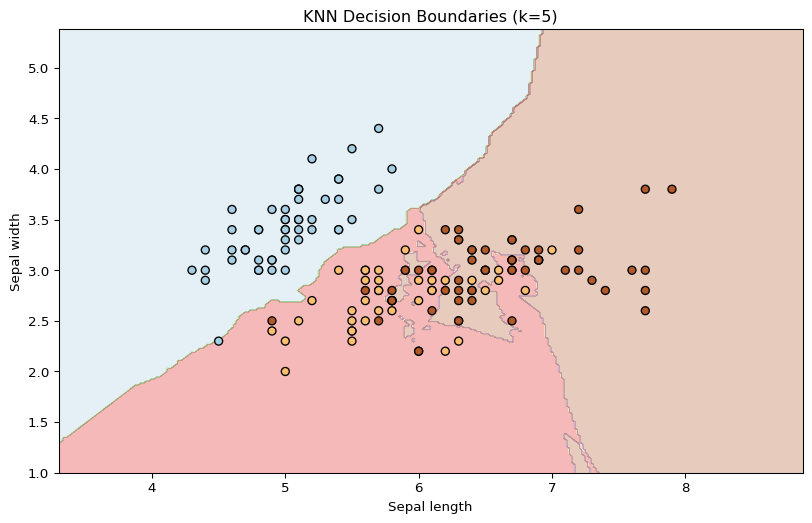
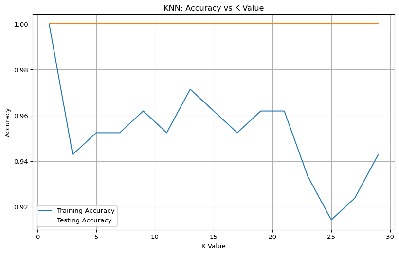
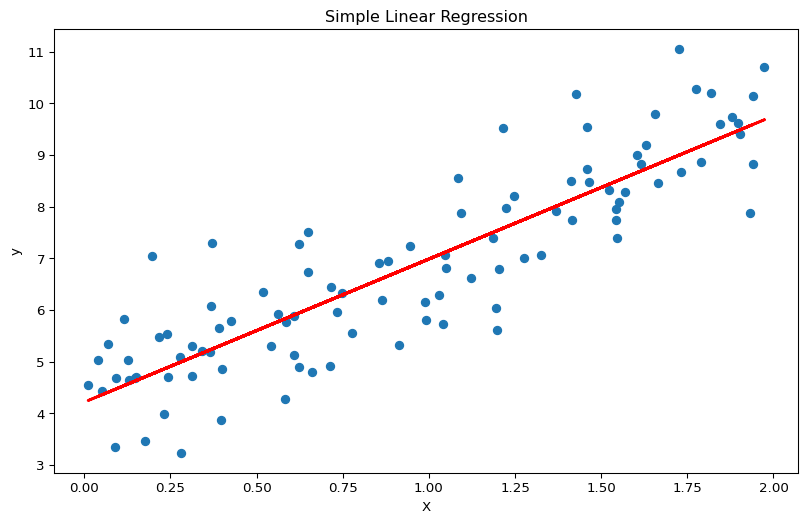
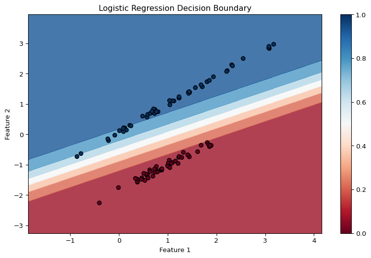
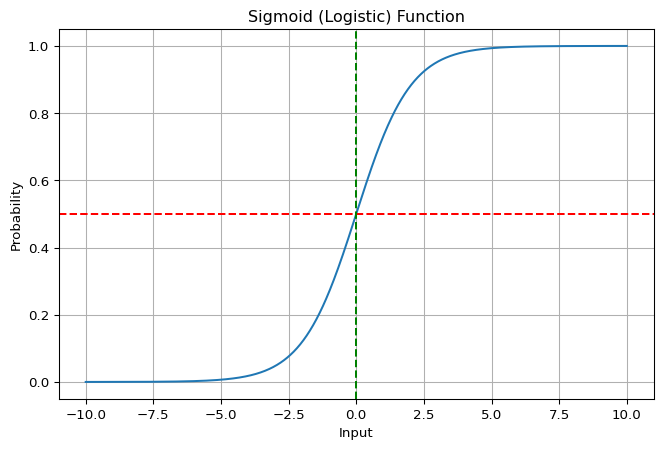
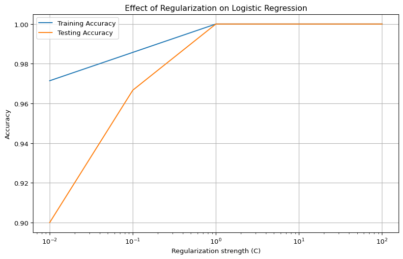
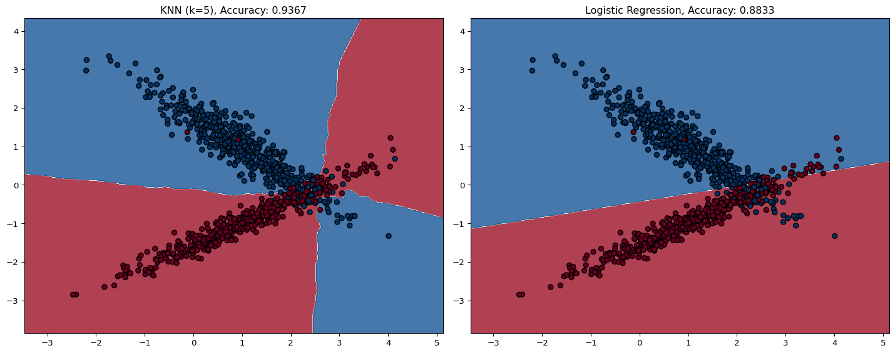

# Import necessary libraries for examples
import numpy as np
import pandas as pd
import matplotlib.pyplot as plt
from sklearn.neighbors import KNeighborsClassifier, KNeighborsRegressor
from sklearn.linear_model import LinearRegression, LogisticRegression
from sklearn.model_selection import train_test_split
from sklearn.datasets import load_iris, make_classification
from sklearn.preprocessing import StandardScaler
from sklearn.metrics import accuracy_score, mean_squared_error, confusion_matrix, classification_report5 Supervised Learning: Regression and Classification
5.1 Introduction to Supervised Learning
Supervised learning is a type of machine learning where the model learns from labeled data. Each input is paired with the correct output, allowing the model to learn the mapping between them. Once trained, the model can predict outcomes for new, unseen data.
Supervised learning is divided into two main categories:
- Classification: Predicting a categorical output (class label)
- Regression: Predicting a continuous numerical value
5.2 K-Nearest Neighbors (KNN)
5.2.1 Overview
K-Nearest Neighbors (KNN) is a simple yet powerful non-parametric algorithm used for both classification and regression. Introduced by Fix and Hodges in 1951, it works on a fundamental principle: similar data points tend to have similar outputs.
Tip
Real-world analogy: KNN is like asking your closest friends for advice. If you want to know if you’ll enjoy a movie, you might ask the opinions of friends whose taste in movies is similar to yours.
5.2.2 How KNN Works
- Distance Calculation: For a new data point, calculate its distance to all points in the training set
- Neighbor Selection: Select the K nearest neighbors based on those distances
- Output Determination:
- For classification: Use majority vote of the K neighbors
- For regression: Take the average of the K neighbors’ values
# Example: KNN Classification with Iris dataset
iris = load_iris()
X, y = iris.data, iris.target
# Split data
X_train, X_test, y_train, y_test = train_test_split(X, y, test_size=0.3, random_state=42)
# Train a KNN classifier
knn = KNeighborsClassifier(n_neighbors=5)
knn.fit(X_train, y_train)
# Predict and evaluate
y_pred = knn.predict(X_test)
accuracy = accuracy_score(y_test, y_pred)
print(f"KNN Classification Accuracy: {accuracy:.4f}")
# Visualize decision boundaries for 2 features
plt.figure(figsize=(10, 6))
# Using only the first two features for visualization
X_vis = X[:, :2]
y_vis = y
# Create mesh grid
h = 0.02 # step size in the mesh
x_min, x_max = X_vis[:, 0].min() - 1, X_vis[:, 0].max() + 1
y_min, y_max = X_vis[:, 1].min() - 1, X_vis[:, 1].max() + 1
xx, yy = np.meshgrid(np.arange(x_min, x_max, h), np.arange(y_min, y_max, h))
# Train and predict on the 2D data
knn_vis = KNeighborsClassifier(n_neighbors=5)
knn_vis.fit(X_vis, y_vis)
Z = knn_vis.predict(np.c_[xx.ravel(), yy.ravel()])
Z = Z.reshape(xx.shape)
# Plot the decision boundary
plt.contourf(xx, yy, Z, alpha=0.3, cmap=plt.cm.Paired)
plt.scatter(X_vis[:, 0], X_vis[:, 1], c=y_vis, edgecolors='k', cmap=plt.cm.Paired)
plt.xlabel('Sepal length')
plt.ylabel('Sepal width')
plt.title('KNN Decision Boundaries (k=5)')
plt.show()KNN Classification Accuracy: 1.0000
5.2.3 Distance Metrics
KNN relies on distance metrics to determine similarity:
- Euclidean Distance: \(\sqrt{\sum_{i=1}^{n} (x_i - y_i)^2}\) - Straight-line distance
- Manhattan Distance: \(\sum_{i=1}^{n} |x_i - y_i|\) - Sum of absolute differences
- Minkowski Distance: A generalization of both Euclidean and Manhattan distances
5.2.4 Choosing K Value
The value of K is critical: - Small K (e.g., K=1): High flexibility, potential overfitting - Large K: Smoother decision boundary, potential underfitting - For classification problems, use an odd K to avoid ties
# Example: Effect of K value on KNN classifier performance
k_values = list(range(1, 30, 2))
train_accuracy = []
test_accuracy = []
for k in k_values:
knn = KNeighborsClassifier(n_neighbors=k)
knn.fit(X_train, y_train)
# Training accuracy
train_pred = knn.predict(X_train)
train_acc = accuracy_score(y_train, train_pred)
train_accuracy.append(train_acc)
# Testing accuracy
test_pred = knn.predict(X_test)
test_acc = accuracy_score(y_test, test_pred)
test_accuracy.append(test_acc)
plt.figure(figsize=(10, 6))
plt.plot(k_values, train_accuracy, label='Training Accuracy')
plt.plot(k_values, test_accuracy, label='Testing Accuracy')
plt.xlabel('K Value')
plt.ylabel('Accuracy')
plt.title('KNN: Accuracy vs K Value')
plt.legend()
plt.grid(True)
plt.show()
5.2.5 Preprocessing for KNN
- Feature Scaling: Essential since KNN uses distance calculations
- Dimensionality Reduction: Helpful for high-dimensional data
- Missing Value Imputation: KNN itself can be used for this purpose
5.2.6 Advantages and Disadvantages
Advantages: - Simple, intuitive algorithm - No training phase (lazy learning) - Non-parametric (no assumptions about data distribution) - Works well for complex decision boundaries
Disadvantages: - Computationally expensive for large datasets - Suffers from the curse of dimensionality - Sensitive to noisy data and outliers - Requires feature scaling
5.2.7 Applications
- Recommendation systems
- Pattern recognition
- Anomaly detection
- Medical diagnosis
- Financial predictions
5.3 Linear Regression
5.3.1 Overview
Linear regression is a fundamental algorithm that models the relationship between a dependent variable and one or more independent variables by fitting a linear equation.
Tip
Real-world analogy: Linear regression is like drawing a “line of best fit” through scattered points on a graph. If you plot house sizes vs. prices, linear regression finds the straight line that best represents the relationship.
5.3.2 The Model
- Simple Linear Regression: \(y = mx + b\)
- One independent variable
- \(y\) is the predicted value
- \(m\) is the slope
- \(b\) is the y-intercept
- Multiple Linear Regression: \(y = b + w_1x_1 + w_2x_2 + \ldots + w_nx_n\)
- Multiple independent variables
- \(b\) is the bias (y-intercept)
- \(w_i\) are the weights for each feature
- \(x_i\) are the input features
# Example: Simple Linear Regression
# Generate synthetic data
np.random.seed(42)
X_simple = 2 * np.random.rand(100, 1)
y_simple = 4 + 3 * X_simple + np.random.randn(100, 1)
# Fit linear regression model
model = LinearRegression()
model.fit(X_simple, y_simple)
# Print coefficients
print(f"Intercept: {model.intercept_[0]:.4f}")
print(f"Slope: {model.coef_[0][0]:.4f}")
# Visualize
plt.figure(figsize=(10, 6))
plt.scatter(X_simple, y_simple)
plt.plot(X_simple, model.predict(X_simple), color='red', linewidth=2)
plt.xlabel('X')
plt.ylabel('y')
plt.title('Simple Linear Regression')
plt.show()
# Example: Multiple Linear Regression
# Generate synthetic data
np.random.seed(42)
X_multi = np.random.rand(100, 3)
y_multi = 4 + X_multi[:, 0]*2 + X_multi[:, 1]*3 + X_multi[:, 2]*1.5 + np.random.randn(100)*0.5
# Fit multiple linear regression model
multi_model = LinearRegression()
multi_model.fit(X_multi, y_multi)
# Print coefficients
print(f"Intercept: {multi_model.intercept_:.4f}")
print(f"Coefficients: {multi_model.coef_}")
# Evaluate
y_pred = multi_model.predict(X_multi)
mse = mean_squared_error(y_multi, y_pred)
print(f"Mean Squared Error: {mse:.4f}")Intercept: 4.2151
Slope: 2.7701
Intercept: 3.8675
Coefficients: [2.13900206 2.9211189 1.78520288]
Mean Squared Error: 0.23015.3.3 Loss Function and Optimization
The objective of linear regression is to find the line (or hyperplane) that minimizes the differences between predicted and actual values. This is typically done using:
- Mean Squared Error (MSE): \(MSE = \frac{1}{N} \sum_{i=1}^{N} (y_i - y'_i)^2\)
- Optimization Algorithm: Usually Gradient Descent or Normal Equation
5.3.4 Assumptions
Linear regression makes several assumptions: 1. Linearity between independent and dependent variables 2. Independence of observations 3. Homoscedasticity (constant variance of errors) 4. Normal distribution of residuals 5. No or minimal multicollinearity
5.3.5 Advantages and Disadvantages
Advantages: - Simple and interpretable - Computationally efficient - Provides clear insight into feature importance - Good baseline for regression problems
Disadvantages: - Limited to linear relationships - Sensitive to outliers - Assumes independence of features - Restrictive assumptions
5.3.6 Applications
- Sales forecasting
- Price prediction (e.g., housing prices)
- Financial analysis
- Medical outcome prediction
- Resource allocation
5.4 Logistic Regression
5.4.1 Overview
Despite its name, logistic regression is a classification algorithm. It estimates the probability that an instance belongs to a particular class using the logistic function to transform a linear combination of features.
Tip
Real-world analogy: Logistic regression is like determining the probability of passing an exam based on hours studied. There’s a threshold (e.g., studying 10 hours) where the probability of passing jumps dramatically.
5.4.2 The Logistic Function
The logistic (sigmoid) function transforms a linear equation into a probability between 0 and 1:
\[P(y=1|X) = \frac{1}{1 + e^{-(b + w_1x_1 + w_2x_2 + \ldots + w_nx_n)}}\]
Where: - \(P(y=1|X)\) is the probability of the positive class - \(b\) is the bias term (intercept) - \(w_i\) are the weights for each feature - \(x_i\) are the input features
# Example: Logistic Regression
# Generate classification dataset
X, y = make_classification(n_samples=100, n_features=2, n_redundant=0,
n_informative=2, random_state=42, n_clusters_per_class=1)
# Split data
X_train, X_test, y_train, y_test = train_test_split(X, y, test_size=0.3, random_state=42)
# Train logistic regression model
log_reg = LogisticRegression()
log_reg.fit(X_train, y_train)
# Predict and evaluate
y_pred = log_reg.predict(X_test)
accuracy = accuracy_score(y_test, y_pred)
print(f"Logistic Regression Accuracy: {accuracy:.4f}")
print("\nClassification Report:")
print(classification_report(y_test, y_pred))
# Visualize decision boundary
plt.figure(figsize=(10, 6))
# Create mesh grid
h = 0.02 # step size in the mesh
x_min, x_max = X[:, 0].min() - 1, X[:, 0].max() + 1
y_min, y_max = X[:, 1].min() - 1, X[:, 1].max() + 1
xx, yy = np.meshgrid(np.arange(x_min, x_max, h), np.arange(y_min, y_max, h))
# Predict probabilities
Z = log_reg.predict_proba(np.c_[xx.ravel(), yy.ravel()])[:, 1]
Z = Z.reshape(xx.shape)
# Plot decision boundary and points
plt.contourf(xx, yy, Z, alpha=0.8, cmap=plt.cm.RdBu)
plt.scatter(X[:, 0], X[:, 1], c=y, edgecolors='k', cmap=plt.cm.RdBu)
plt.xlabel('Feature 1')
plt.ylabel('Feature 2')
plt.title('Logistic Regression Decision Boundary')
plt.colorbar()
plt.show()
# Visualize sigmoid function
def sigmoid(x):
return 1 / (1 + np.exp(-x))
x = np.linspace(-10, 10, 1000)
y = sigmoid(x)
plt.figure(figsize=(8, 5))
plt.plot(x, y)
plt.grid(True)
plt.title('Sigmoid (Logistic) Function')
plt.xlabel('Input')
plt.ylabel('Probability')
plt.axhline(y=0.5, color='r', linestyle='--')
plt.axvline(x=0, color='g', linestyle='--')
plt.show()Logistic Regression Accuracy: 1.0000
Classification Report:
precision recall f1-score support
0 1.00 1.00 1.00 15
1 1.00 1.00 1.00 15
accuracy 1.00 30
macro avg 1.00 1.00 1.00 30
weighted avg 1.00 1.00 1.00 30


5.4.3 Types of Logistic Regression
- Binary Logistic Regression: Two possible outcomes (e.g., spam/not spam)
- Multinomial Logistic Regression: Multiple classes without order (e.g., predicting fruit type)
- Ordinal Logistic Regression: Multiple classes with order (e.g., movie ratings)
5.4.4 Maximum Likelihood Estimation
Logistic regression uses Maximum Likelihood Estimation (MLE) to find the optimal parameters. It seeks to maximize the probability of observing the data given the parameters.
5.4.5 Evaluation Metrics
- Accuracy: Proportion of correct predictions
- Precision: True positives / (True positives + False positives)
- Recall: True positives / (True positives + False negatives)
- F1 Score: Harmonic mean of precision and recall
- AUC-ROC: Area under the Receiver Operating Characteristic curve
5.4.6 Regularization
Logistic regression can benefit from regularization to prevent overfitting: - L1 Regularization (Lasso): Adds absolute value of coefficients to loss function - L2 Regularization (Ridge): Adds squared value of coefficients to loss function
# Example: Logistic Regression with Regularization
# Comparing different regularization strengths
C_values = [0.01, 0.1, 1, 10, 100]
train_scores = []
test_scores = []
for C in C_values:
# C is inverse of regularization strength
log_reg = LogisticRegression(C=C, max_iter=1000)
log_reg.fit(X_train, y_train)
# Score on training data
train_score = log_reg.score(X_train, y_train)
train_scores.append(train_score)
# Score on test data
test_score = log_reg.score(X_test, y_test)
test_scores.append(test_score)
plt.figure(figsize=(10, 6))
plt.semilogx(C_values, train_scores, label='Training Accuracy')
plt.semilogx(C_values, test_scores, label='Testing Accuracy')
plt.xlabel('Regularization strength (C)')
plt.ylabel('Accuracy')
plt.title('Effect of Regularization on Logistic Regression')
plt.legend()
plt.grid(True)
plt.show()
5.4.7 Advantages and Disadvantages
Advantages: - Outputs probabilities - Highly interpretable coefficients - Efficient training - Works well for linearly separable classes - Can be extended to multi-class problems
Disadvantages: - Limited to linear decision boundaries - Requires feature engineering for complex relationships - Can suffer from complete separation issues - Sensitive to outliers and imbalanced data
5.4.8 Applications
- Credit scoring
- Medical diagnosis
- Email spam detection
- Customer churn prediction
- Marketing campaign effectiveness
5.5 Comparison of Algorithms
# Generate a dataset for comparison
np.random.seed(42)
X, y = make_classification(n_samples=1000, n_features=2, n_redundant=0,
n_informative=2, random_state=42, n_clusters_per_class=1)
# Split the data
X_train, X_test, y_train, y_test = train_test_split(X, y, test_size=0.3, random_state=42)
# Train models
knn_model = KNeighborsClassifier(n_neighbors=5)
log_reg_model = LogisticRegression()
knn_model.fit(X_train, y_train)
log_reg_model.fit(X_train, y_train)
# Predict
knn_pred = knn_model.predict(X_test)
log_reg_pred = log_reg_model.predict(X_test)
# Evaluate
knn_acc = accuracy_score(y_test, knn_pred)
log_reg_acc = accuracy_score(y_test, log_reg_pred)
print(f"KNN Accuracy: {knn_acc:.4f}")
print(f"Logistic Regression Accuracy: {log_reg_acc:.4f}")
# Visualize decision boundaries
fig, (ax1, ax2) = plt.subplots(1, 2, figsize=(15, 6))
# Create mesh grid
h = 0.02 # step size in the mesh
x_min, x_max = X[:, 0].min() - 1, X[:, 0].max() + 1
y_min, y_max = X[:, 1].min() - 1, X[:, 1].max() + 1
xx, yy = np.meshgrid(np.arange(x_min, x_max, h), np.arange(y_min, y_max, h))
# KNN decision boundary
Z = knn_model.predict(np.c_[xx.ravel(), yy.ravel()])
Z = Z.reshape(xx.shape)
ax1.contourf(xx, yy, Z, alpha=0.8, cmap=plt.cm.RdBu)
ax1.scatter(X[:, 0], X[:, 1], c=y, edgecolors='k', cmap=plt.cm.RdBu)
ax1.set_title(f'KNN (k=5), Accuracy: {knn_acc:.4f}')
# Logistic Regression decision boundary
Z = log_reg_model.predict(np.c_[xx.ravel(), yy.ravel()])
Z = Z.reshape(xx.shape)
ax2.contourf(xx, yy, Z, alpha=0.8, cmap=plt.cm.RdBu)
ax2.scatter(X[:, 0], X[:, 1], c=y, edgecolors='k', cmap=plt.cm.RdBu)
ax2.set_title(f'Logistic Regression, Accuracy: {log_reg_acc:.4f}')
plt.tight_layout()
plt.show()KNN Accuracy: 0.9367
Logistic Regression Accuracy: 0.8833
5.6 Summary
This lecture covered three fundamental supervised learning algorithms:
- K-Nearest Neighbors (KNN)
- Non-parametric instance-based learning
- Makes predictions based on similarity (distance metrics)
- Works for both classification and regression
- Simple but powerful for many applications
- Linear Regression
- Models linear relationship between dependent and independent variables
- Uses least squares method to minimize errors
- Best for numeric predictions where relationships are linear
- Provides interpretable coefficients
- Logistic Regression
- Despite its name, used for classification problems
- Estimates probabilities using the sigmoid function
- Outputs values between 0 and 1 (probabilities)
- Works well for binary and multi-class classification
5.6.1 Choosing the Right Algorithm
- Use KNN when:
- The decision boundary is complex
- You need a simple, interpretable model
- The dataset is small to medium sized
- Preprocessing and feature scaling are properly applied
- Use Linear Regression when:
- The relationship between variables is approximately linear
- You need a continuous numerical prediction
- Interpretability of coefficients is important
- You need a baseline regression model
- Use Logistic Regression when:
- You need class probabilities as output
- The decision boundary is approximately linear
- You need an interpretable model
- Feature importance is of interest